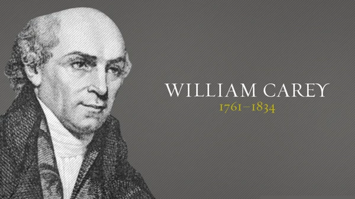

William Carey
Father of Modern Missions

William Carey: Father of Modern Missions
Here's a time line of William Carey's Life:
- 1761
William Carey was born on August 17, 1761, Paulerspury, Northamptonshire, England. - 1783
A Baptist from 1783, Carey served for several years as a pastor in Moulton, Northamptonshire, where he also taught school and continued his trade as a shoemaker. - 1789
In 1789 he transferred to the Baptist church at Leicester and three years later published a pamphlet titled An Enquiry into the Obligations of Christians to Use Means for the Conversion of the Heathens, which led to his forming, with a dozen other ministers, the English Baptist Missionary Society. - 1793
The society’s first missionaries, Carey and John Thomas, a doctor, went to Calcutta (Kolkata) in 1793. - 1794
The following year, Carey removed himself from the society’s financial support when he became superintendent at an indigo plant in Mudnabati, Bengal. There he also preached, taught, and began his first Bible translation. - 1800
He was ompelled to leave British Indian territory, he and his family moved to the Danish colony of Frederiksnagar, near Calcutta, in 1800.There he and Joshua Marshman and William Ward, collectively known as the “Serampore trio,” founded the mission described by the English philanthropist William Wilberforce as “one of the chief glories” of the British nation. - 1801
Appointed in 1801 to teach Bengali, Sanskrit, and Marathi at Fort William College, Carey translated the Bible into Bengali, Oriya, Marathi, Hindi, Assamese, and Sanskrit. He also translated parts of it into 29 other languages and dialects. He edited, with Marshman, a grammar in Bhotia and prepared six other grammars in different languages. In addition to dictionaries in Bengali, Sanskrit, and Marathi, Carey and Marshman prepared a translation of three volumes of the Hindu epic poem Ramayana. - 1814
Having established a press at Serampore, Carey edited and published two works by horticulturist William Roxburgh, Hortus Bengalensis (1814) and Flora Indica (1832), and helped distribute prose texts for use in schools. His social work extended beyond education to urge the government to outlaw such practices as infanticide and suttee (in which Hindu widows immolated themselves on their husbands’ funeral pyres). - 1820
He also encouraged the use of Indians as missionaries and led in the formation of the Agricultural Society of India in 1820. - 1821
Carey's second wife, Charlotte, died in 1821, followed by his eldest son Felix. In 1823 he married a third time, to a widow named Grace Hughes. - 1834
He was died June 9, 1834, Frederiksnagar [now Shrirampur], India